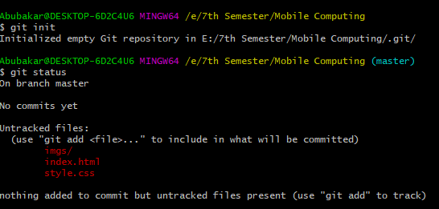

Step 1.1) Create an account on Github.

Step 1.2) Create a new remote repository.

Step 1.3) Choose a name and finish creating the repository.

Step 1.4) Download and install Git.

Step 1.5) Download and install Git.
Now, We will create a local repository using Git.
Step 2.1) Create a project in a folder and create a git repository there using git init.

Step 2.2) Check the status of the files using git status.

Step 2.3) Add the untracked file(s) to the staging area using git add *filename/directory*.
Step 2.4) To remove any file(s) from staging are you can use git rm --cahced *filename*.

Step 2.5) To check the difference between two branches, commits etc., use git diff.

Step 2.1) Create a project in a folder and create a git repository there using git init.
Step 2.2) Check the status of the files using git status.
Step 2.3) Add the untracked file(s) to the staging area using git add *filename/directory*.
Step 2.4) To remove any file(s) from staging are you can use git rm --cahced *filename*.
Step 2.5) To check the difference between two branches, commits etc., use git diff.